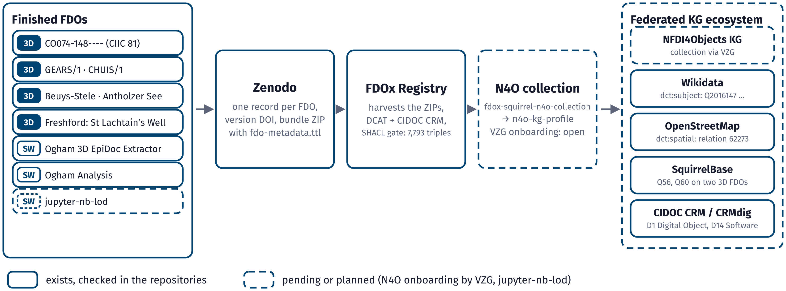
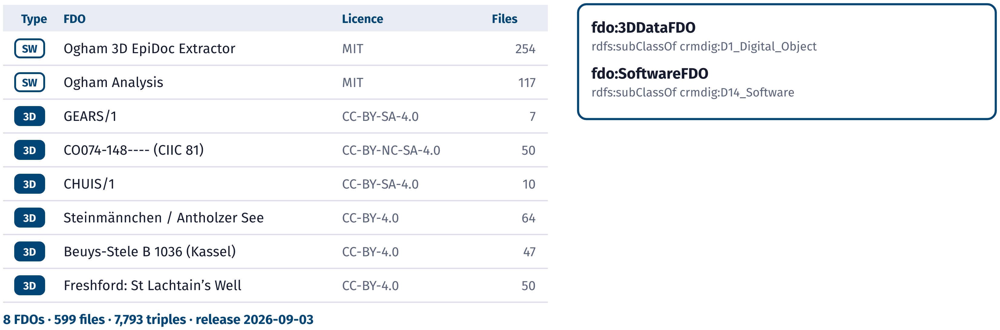

Federated knowledge graph ecosystem
Finished 3D and software FDOs in the registry and the N4O collection.

FE.1From packaged FDOs to the federated KG: 3D models and software take the same road. Six 3D and two software FDOs are in the registry; jupyter-nb-lod is planned, via fdo-git-packager. Both kinds of FDO pass the same gates: the registry reads a 3DDataFDO and a SoftwareFDO with one pipeline, and the KG only ever sees the registry’s CRM-anchored bundle.
FDOx-squirrel, fdox-visuals (Florian Thiery, Research Squirrel Engineers Network / LEIZA). Code: MIT licence. Read 2026-11-05: fdo-squirrel-registry 253aee9 (release 2026-09-03); fdox-squirrel-n4o-collection 882a5f7 (README status 2026-09-04).



FE.2One catalogue, two kinds of FDO: the registry’s overview query lists 3D data and software side by side. Every row is a dcat:Dataset with a licence and distributions, whatever it describes, so a model of a stone and the code that extracts its inscription are found, filtered and counted the same way.
FDOx-squirrel, fdox-visuals (Florian Thiery, Research Squirrel Engineers Network / LEIZA). Code: MIT licence. Registry query “Every FDO with its type, licence and file count” (queries.yaml); values from registry-index.json, release 2026-09-03. A ninth pinned record has no fdo-metadata.ttl.